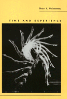

An analysis of the philosophy of time
An analysis of the philosophy of time


 An analysis of the philosophy of time
An analysis of the philosophy of time

|  |
Time and ExperiencePeter K. McInerneypaper EAN: 978-1-56639-010-1 (ISBN: 1-56639-010-9) |
"This is a sophisticated, scholarly study that is distinctive in the ways it combines a philosophical analysis of time with an analysis of modern phenomenology and these, in turn, with the author's independent approach toward explaining 'the special temporality of human beings.' ... A fine piece of work."
—Gerald E. Myers
This book is the only contemporary, systematic study of the relationship of time and conscious experience. Peter K. Mclnerney examines three tightly interconnected issues: how we are able to be conscious of time and temporal entities, whether time exists independently of conscious experience, and whether the conscious experiencer exists in time in the same way that ordinary natural objects are thought to exist in time. Insight is drawn from the views of major phenomenological and existential thinkers on these issues.
Building on a detailed explication and critique of the views of Kant, Husserl, Heidegger, and Sartre, Mclnerney develops and defends his own positions. He argues that a revised version of Husserl’s three-feature theory of time-consciousness provides the best explanation of our awareness of temporal features, but that an independently real time is necessary to explain our experience of temporal passage. He also shows that human existence has some special temporal features in addition to those it shares with other entities. Time-consciousness, the conscious exercise of powers, and personal identity through time require that any temporal part of human existence be defined by and "reach across" to earlier and later parts.
"McInerney manages to avoid virtually all of the problems that have increasingly isolated the phenomenology of 'time-consciousness' from correlative developments in cognitive science and the philosophy of space-time. The book is not limited to an exegesis of what the 'great masters' have had to say on the topic, though McInerney does offer brief lucid interpretations of Kant, Husserl, Heidegger, and Sartre.... Recommended."
—Choice
"This is a truly commendable piece of work. It incorporates solid scholarship, is carefully argued, and is often insightful. Mclnerney has written an important book that is a significant contribution to the development of the philosophy of time."
—Charles M. Sherover, Hunter College, CUNY
Acknowledgments
Introduction
Part I: The Issues
1. Time-Consciousness and the Ontology of Time
2. The Denial of Temporal Realism
3. The Question of a Special Temporality
Part II: Phenomenological Positions
4. Kant's Theory of Time-Consciousness and Time
5. Husserl's Theory of Time-Consciousness and Time
6. Heidegger's Theory of Time-Consciousness and Temporality
7. Sartre's Theory of Time-Consciousness and Time
Part III: The Temporality of Experience
8. Time-Consciousness
9. Temporal Realism
10. The Special Temporality of Human Being
Conclusion
Appendix
Notes
Index
 | Peter K. McInerney is Professor of Philosophy at Oberlin College. |
© 2015 Temple University. All Rights Reserved. This page: http://www.temple.edu/tempress/titles/726_reg.html.